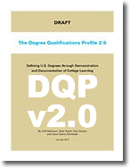

About The DQP - Nationally
The Degree Qualifications Profile
Defining degrees: A new direction for American higher education to be tested and developed in partnership with faculty, students, leaders and stakeholders.
|  | The Degree Qualifications Profile v2.0By Cliff Adelman, Peter Ewell, Paul Gaston and Carol Geary Schneider Version 2.0 of a framework for defining the learning and quality that college degrees should signify. Download The Full Publication (709.85 KB) --OR-- Read It Online |
The Degree Qualifications ProfileBy Cliff Adelman, Peter Ewell, Paul Gaston and Carol Geary Schneider A framework for defining the learning and quality that college degrees should signify. Download The Full Publication (4.57 MB) --OR-- Download The Executive Summary (476.59 KB) |
|
The Degree Qualifications Profile - Implications for AssessmentBy Peter Ewell (January 2013) Occasional Paper #16 LearningOutcomesAssessment.org Download The Full Publication (1.28 MB) |
Available Videos
Information from NILOA
The National Institute for Learning Outcomes Assessment- The DQP Corner
- New To The DQP?
- DQP In Practice
- The DQP Resource Kit Occasional Papers &
- Reports DQP Forum DQP Event Calendar DQP
- Webinar Series (many webinars here)
- The DQP In Practice NILOA Newsletters (many DQP articles)
- DQP Assignments Library
Articles from Inside Higher Ed (http://www.insidehighered.com)
- 2010-09-13 Borrowing From Bologna (88.1 KB)
- 2011-01-25 What Degrees Should Mean (174.99 KB)
- 2011-01-31 From Heresy to Possibility (111.81 KB)
- 2011-02-08 Who Is Really Adrift (155.88 KB)
- 2011-03-13 The next stage of assessment (87.93 KB)
- 2011-04-04 The Faculty Take on Student Learning (108.87 KB)
- 2011-04-14 What is Good Enough (126.12 KB)
- 2011-04-21 Numbers That Bedazzle Numbers That Benumb (144.65 KB)
- 2011-10-03 New Effort to Help State Systems Promote Student Competencies (43.82 KB)
- 2011-11-18 Raising the Bar on Quality Assurance (108.81 KB)
- 2012-01-30 Dear President Obama (165.66 KB)
- 2012-02-09 We Are Losing Our Minds (146.97 KB)
- 2012-02-13 Tuning History (75.98 KB)
- 2012-05-07 New College New Model (117.96 KB)
- 2012-10-01 A Disruption Grows U (116.61 KB)
- 2013-01-10 New Look for Lumina (75.72 KB)
- 2013-01-17 New Paper Aims to Invigorate Promise of Degree Qualifications Profile (49.78 KB)
- 2013-04-17 Big Disruption Big Questions (123.78 KB)
- 2013-04-22 Credit Without Teaching (176.16 KB)
- 2013-06-06 Competence Technology and Their Discontents (125.58 KB)